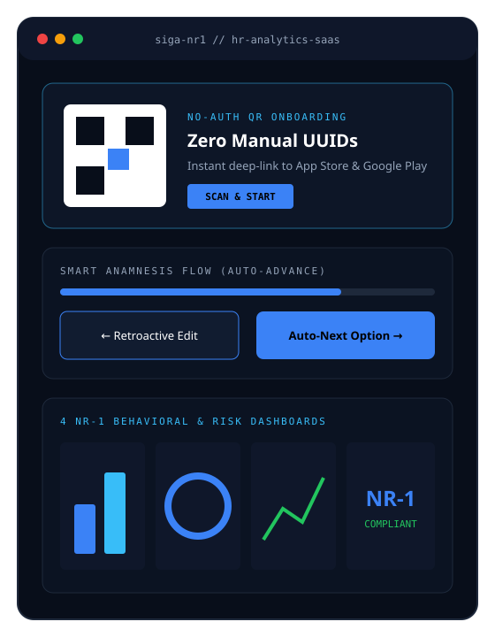

Engenharia Frontend e otimização de UX para plataforma SaaS de RH focada em conformidade com a NR-1: onboarding via QR Code sem cópia manual de UUIDs, fluxo inteligente de anamnese e 4 dashboards analíticos mobile-first.
Integrados a APIs para exibição de métricas de risco ocupacional NR-1 com design mobile-first e feedbacks visuais de carregamento e ação.
Substituição da cópia manual de UUIDs por uma landing page no-auth responsiva com cadastro via QR Code e links diretos das lojas de apps.

O SIGA é uma plataforma SaaS de RH focada em conformidade com a norma NR-1, realizando análise comportamental para gerenciamento de riscos ocupacionais. Colaboradores e gestores de RH precisavam de uma jornada fluida desde o primeiro acesso até a leitura estratégica dos indicadores.
Atritos no onboarding de usuários e no preenchimento do questionário comportamental prejudicavam a experiência e o tempo de resposta:
Onboarding QR Code, Anamnese Inteligente & 4 Dashboards
Criei uma landing page no-auth responsiva em React e Tailwind CSS para cadastro via QR Code com links diretos das lojas de apps, eliminando a cópia manual de UUIDs. Redesenhei o formulário de anamnese com avanço automático ao selecionar opções, navegação reversa e edição retroativa, e desenvolvi 4 dashboards analíticos mobile-first integrados a APIs.
Eliminando fricção no onboarding e transformando dados comportamentais NR-1 em decisões visuais
Transformando fluxos regulatórios da NR-1 em interfaces rápidas, responsivas e intuitivas em React e Tailwind CSS.
Criação de página responsiva em React/Tailwind para cadastro via QR Code e redirecionamento direto às lojas de apps.
Implementação de avanço automático ao selecionar opções, navegação reversa e edição retroativa sem perda de estado.
Desenvolvimento de 4 painéis analíticos integrados a APIs para exibição de indicadores de RH e riscos ocupacionais.